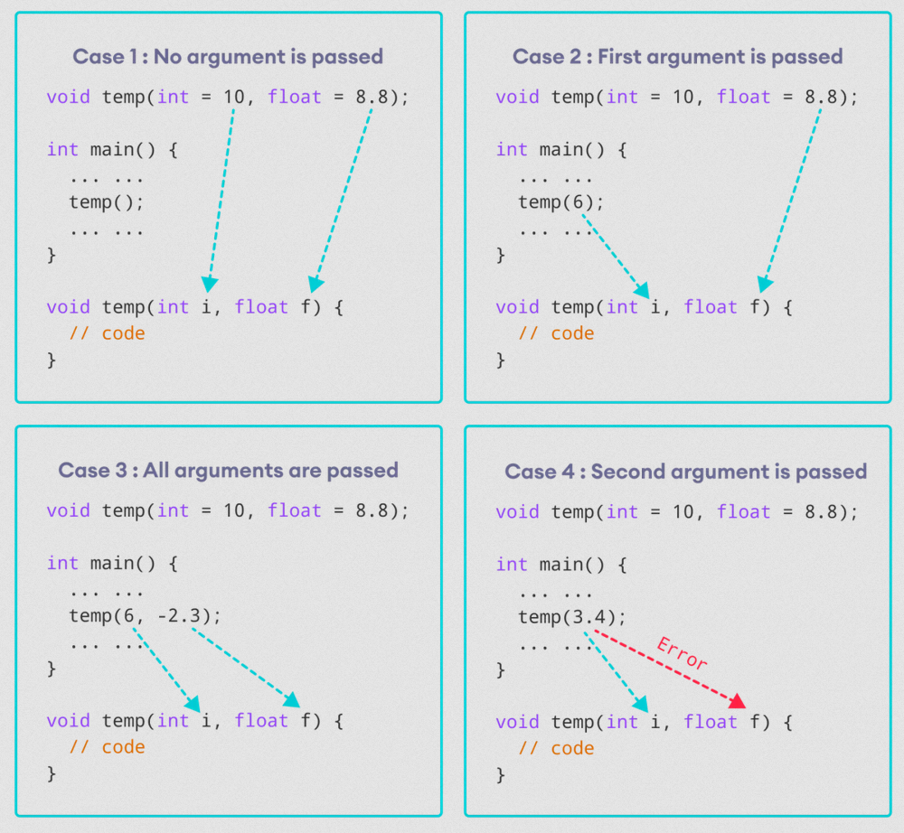

In C++ programming, we can provide default values for function parameters.
If a function with default arguments is called without passing arguments, then the default parameters are used.
However, if arguments are passed while calling the function, the default arguments are ignored.
Default Arguemnts

We can understand the working of default arguments from the image above:
- When
temp()is called, both the default parameters are used by the function. - When
temp(6)is called, the first argument becomes6while the default value is used for the second parameter. - When
temp(6, -2.3)is called, both the default parameters are overridden, resulting ini = 6andf = -2.3 -
When
temp(3.4)is passed, the function behaves in an undesired way because the second argument cannot be passed without passing the first argument.
Therefore,3.4is passed as the first argument. Since the first argument has been defined asint, the value that is actually passed is3.
Example: Default Argument
#include <iostream>
using namespace std ;
void display (char symbol = '*' , int count = 3 ) {
for (int i = 1 ; i <= count; ++i) {
cout << symbol;
}
cout << '\n ' ;
}
int main () {
cout << "No argument passed: " ;
display ();
cout << "First argument passed: " ;
display ('#' );
cout << "Both argument passed: " ;
display ('$' , 5 );
return 0 ;
}
No argument passed: ***
First argument passed: ###
Both arguments passed: $$$$$
Here is how this program works:
display()is called without passing any arguments. In this case,display()uses both the default parametersc = '*'andn = 3.display('#')is called with only one argument. In this case, the first becomes'#'. The second default parametern = 3is retained.display('#', count)is called with both arguments. In this case, default arguments are not used.
Things to Remember
-
Once we provide a default value for a parameter, all subsequent parameters must also have default values. For example,
// Invalid void add (int a,int b =3 ,int c,int d);// Invalid void add (int a,int b =3 ,int c,int d =4 );// valid void add (int a,int c,int b =3 ,int d =4 ); - If using function prototype, default arguments are defined in declaration, instead of definition.
// Valid (without function prototype)
void add (int a = 1 , int b = 2 ) {
// code
}
int main () {
add ();
}
// Valid
void add (int = 1 , int = 2 );
int main () {
add ();
}
void add (int a, int b) {
// code
}
// Invalid
void add (int , int );
int main () {
add ();
}
void add (int a = 1 , int b = 2 ) {
// code
}